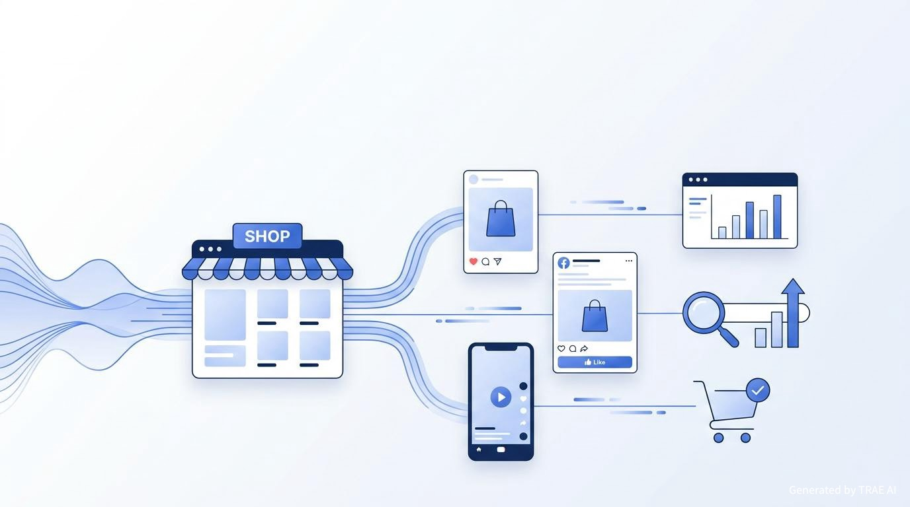
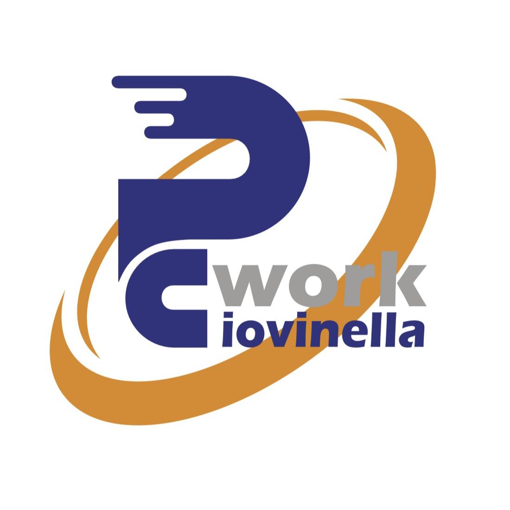

Sito · Social · Automazioni · SEO
Una demo nata come evoluzione dei progetti pubblicati su pc-work.it: mostra come un sito possa diventare uno strumento più efficace grazie a social, automazioni, controllo SEO e percorsi di vendita più intelligenti.
Panoramica
Pensata come estensione dei progetti già pubblicati nel portfolio di pc-work.it.
Non solo pagine vetrina: gestione contenuti, integrazioni, cataloghi, dati e automazioni.
Social, automazioni e SEO come leve concrete per più contatti e più continuità.
Si appoggia ai lavori già firmati da PC Work e ne rappresenta l'evoluzione più completa.
PC Work realizza siti evoluti, capaci di collegare visibilità, gestione interna, social e risultati concreti.
Da portfolio a proposta completa
Dal sito vetrina al progetto dinamico, fino alla gestione social e alle automazioni: il sito non deve solo esistere, ma aiutare l'attività a lavorare meglio e a ottenere più risultati.
Valore concreto
Più controllo
gestione più semplice
Un progetto ordinato e aggiornabile, costruito attorno a come lavori davvero.
Più visibilità
social + SEO
Il sito dialoga con i social e rafforza la presenza online grazie a contenuti, struttura e ottimizzazione.
Più automazioni
meno lavoro manuale
Messaggi, contenuti, cataloghi e recupero utenti gestiti in modo più intelligente e costante.
Più risultati
contatti e conversioni
Il sito smette di essere solo una presenza online e inizia a lavorare per l'acquisizione di nuovi contatti.
Il progetto full stack porta ordine, visibilità, automazione e maggiore capacità di generare richieste.
Flusso operativo
Schede, foto, prezzo, stock e categorie restano aggiornati in un solo punto.
Meta, Instagram o altri canali leggono in automatico i prodotti già presenti sul sito.
Post, annunci dinamici e remarketing mostrano i prodotti più giusti alle persone giuste.
Email, WhatsApp o automazioni recuperano interesse, carrelli e richieste non concluse.
Ogni click, contatto e acquisto torna in report chiari, utili per decidere cosa spingere.
Automazioni commerciali
Il catalogo del sito aggiorna automaticamente social e piattaforme adv con dati coerenti.
base operativaI prodotti diventano contenuti, campagne stagionali, novità e promozioni senza ricopiare tutto a mano.
social sellingChi visita una scheda o interagisce con un contenuto rivede il prodotto o una variante correlata.
recupero utentiMessaggi automatici riportano l'utente sul sito con reminder, incentivo o prova sociale.
conversioneVendite, campagne, lead e traffico vengono letti insieme, così il team decide con più lucidità.
controlloControllo SEO
Se il catalogo è ben strutturato, veloce e indicizzato bene, il sito lavora anche quando le campagne rallentano.
Monitoraggio continuo
La parte tecnica e la parte commerciale vengono lette insieme, non come attività separate.
La reportistica resta comprensibile e orientata alle decisioni.
Nel portfolio
Siti chiari, veloci e pensati per contatti immediati, prenotazioni e presenza locale.
La parte gestionale: catalogo dinamico, filtri, area admin e logica più avanzata di un sito vetrina.
Un progetto che unisce catalogo, dashboard, gestione stock e attenzione alla visibilità online.
Il passo successivo: un sito progettato per lavorare con social, automazioni, dati e risultati concreti.
Scenario dimostrativo
Grafico illustrativo: l'equilibrio tra visibilità, automazioni, presenza social e crescita del progetto.
Percorso di progetto
Si parte da portfolio e attività per definire priorità, canali e risultati attesi.
strategiaRealizzazione del sito con gestione contenuti, cataloghi e integrazioni.
sviluppoCollegamento dei canali e attivazione dei flussi automatici di pubblicazione e recupero.
integrazioneOttimizzazione continua e report chiari per guidare le decisioni nel tempo.
crescita
Sono Manuel, lo sviluppatore. Sarò sempre pronto, in qualsiasi momento, a trovare insieme soluzioni in grado di soddisfare le tue esigenze lavorative.
Ricorda il nostro motto: sviluppare, sviluppare e ancora sviluppare.